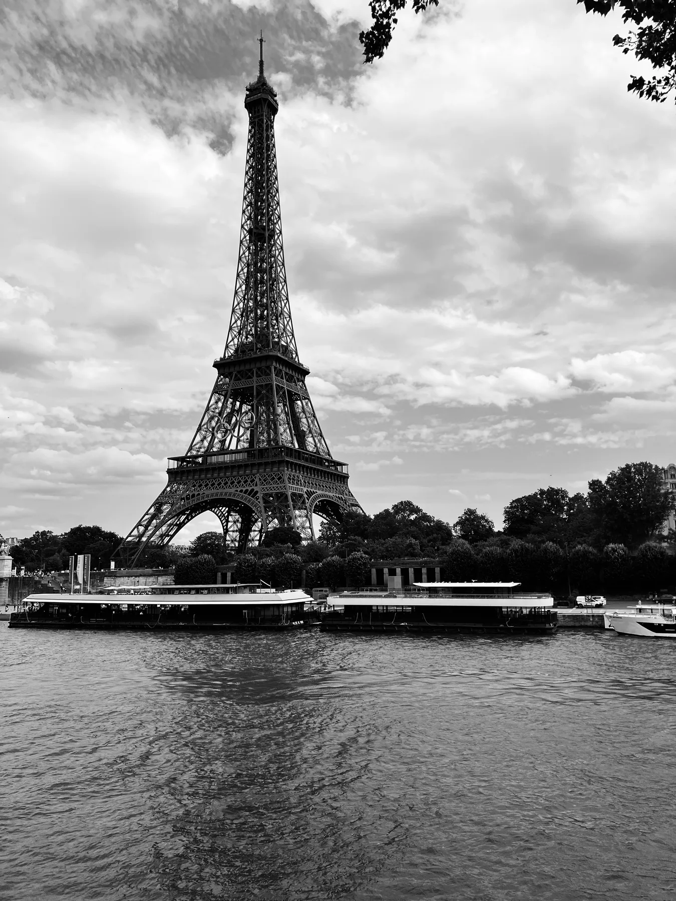

여행 길 위에서 담은 조용한 순간들을 모았습니다. 설명 대신, 숨 고를 공간을 남깁니다.
Quiet moments collected on the road, with room to pause.
03 / PLACES
Places, light, and the moments worth keeping.
여행 길 위에서 만난 빛과 공간, 오래 남는 순간들.

여행 길 위에서 담은 조용한 순간들을 모았습니다. 설명 대신, 숨 고를 공간을 남깁니다.
Quiet moments collected on the road, with room to pause.